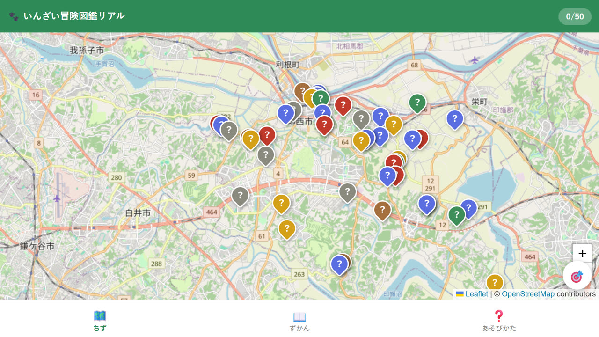
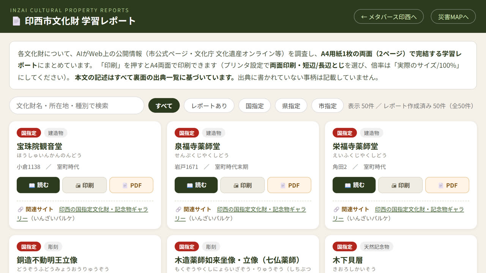

CBI PROJECT
いんざい文化財ずかん
歩いて、見て、読む。印西の文化財50件。
印西市が指定・登録している文化財は50件あります。神社の獅子舞、古墳、樹齢を重ねた桜、戦時中の掩体壕まで、種類も場所もさまざまです。 ただ、「どこにあるか」「何が価値なのか」を知る手がかりは多くありません。 このプロジェクトでは、その50件に触れる方法を3つ用意しました。現地を歩く、3Dで見る、A4にまとめて読む。 どれも無料で、登録もアプリのインストールも必要ありません。
3 WAYS
3つの入口
同じ50件のデータをもとに、目的に合わせて3つの入口を用意しています。 「子どもと外を歩きたい」「家で調べたい」「印刷して配りたい」で選べます。
歩く
いんざい冒険図鑑リアル
文化財のある場所へ実際に行くと、その文化財の精霊が図鑑に加わります。50件それぞれに精霊がいます。
▶ 冒険をはじめる
画面イメージ：地図に50件のピン。近づくと精霊が出ます 見るメタバース印西（3D）
印西市の街並みを3Dで再現した空間を歩き、50件の場所を上空から確かめられます。ずかん・年表・レベル別クイズつき。
▶ 3Dで見る プレイ動画（69秒・無音）：鳥になって50か所をめぐるダイジェスト 読む学習レポート 50件
1件がA4用紙1枚の両面で完結します。基礎データ、歴史、見どころ、用語、年表、クイズ、現地で確かめること、出典一覧。
▶ レポートを読む
画面イメージ：一覧から「読む」「印刷」「PDF」を選べますDATA
50件の内訳
印西市が公開している「指定・登録文化財」の一覧にもとづく件数です。
6国指定
17県指定
26市指定
1国登録
彫刻 11
工芸品 9
史跡 6
無形民俗文化財 6
歴史資料 6
建造物 4
天然記念物 4
考古資料 2
有形民俗文化財 1
古文書 1
SOURCES & NOTES
出典と、見学するときのお願い
- 解説とレポートの根拠：記述はすべて印西市および千葉県教育委員会の公式ページの記載にもとづいています。出典に書かれていない事柄は記載していません。学習レポートは本文の記述ごとに出典番号を振り、裏面の出典一覧と対応させています。
- 写真：印西市ホームページ掲載の写真を使用しています（掲載の許可を得ています）。表示のあるページには出典を明記しています。50件のうち写真があるのは20件で、残りは市のページにも写真がありません。
- 個人のお宅・私有地にあるものがあります：上宿古墳、吉高の大桜、藤の木、岩井家住宅主屋などは個人の所有です。無断で敷地に立ち入らないでください。
- お祭りや獅子舞は、実施が変わることがあります：無形民俗文化財は、その年の担い手や地域の状況によって内容や日程が変わります。開催の有無・時間は事前にご確認ください。
- ピンの位置について：地図上の位置は住所の代表点をもとにしているため、広い敷地や山林では実際の場所とずれることがあります。現地で気づいた点はCBIまでお知らせください。
- 問い合わせ先：文化財そのものについては、印西市教育委員会 生涯学習部文化振興課文化財係（0476-33-4714）へお願いします。